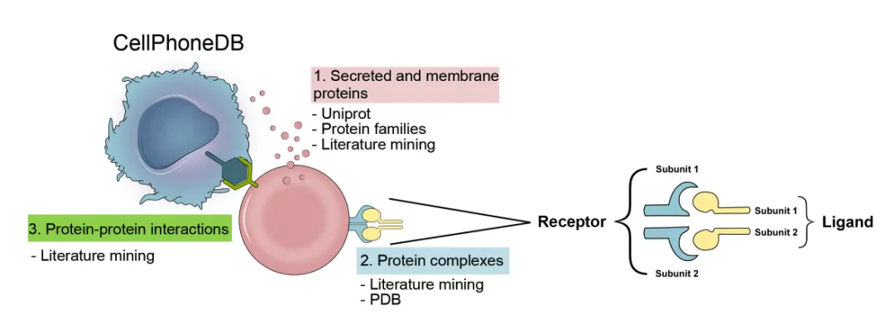
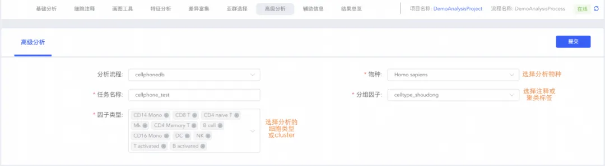
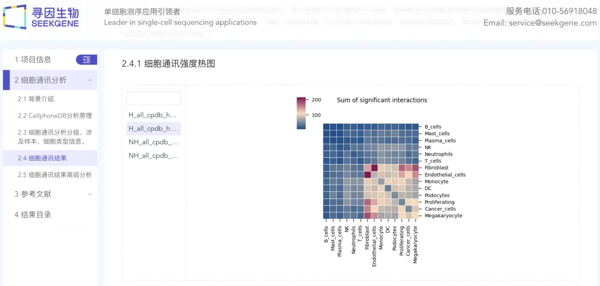
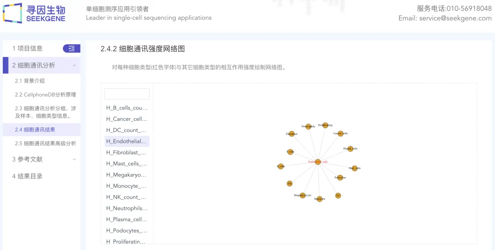
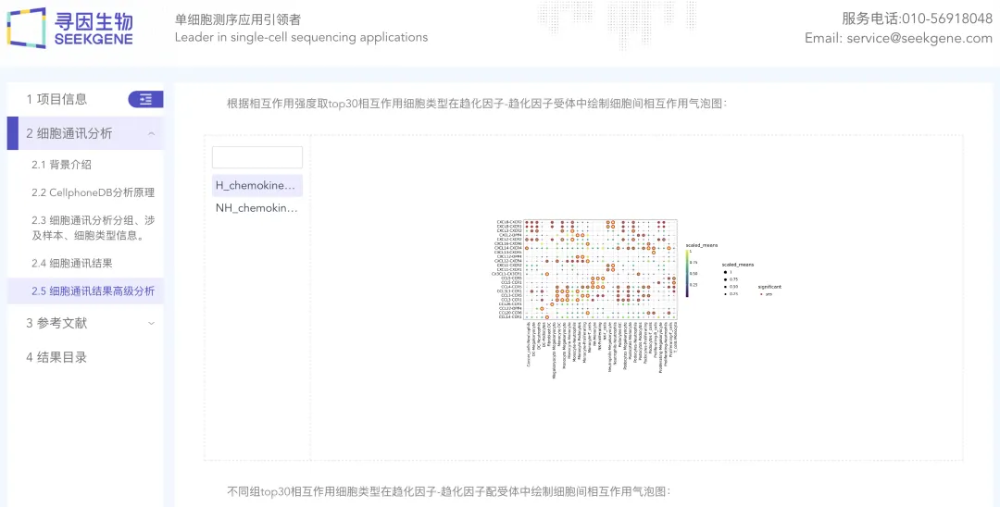

零代码单细胞| 细胞通讯分析
原文：https://mp.weixin.qq.com/s?__biz=MzAwMzIzOTk5OQ==&mid=2247510401&idx=8&sn=bebffda99e0c1763147c3315cfe62676&chksm=9b3cd0d1ac4b59c749d43534fda622b35585efb832c618cb58ca292eb05391aa8a1397b84c11#rd 合集：单细胞云平台
导语 .
细胞通讯分析通过计算不同细胞类型间受配体对的表达情况，推断细胞间的相互作用，从而探讨细胞间的相互作用对生长发育、分化和疾病等多种生物学过程的影响。分析过程中，多种分析内容的包和环境安装和管理繁琐，同时受配体对缺乏按功能分类，分析结果无从下手 等问题无须担心。SeekSoul Online单细胞数据分析云平台为您提供了一键式的细胞通讯分析解决方案。 简单配置参数后，即可轻松获得细胞间的通讯关系及多种功能类型的受配体对结果。
云 平台访问链接：https://seeksoul.online/t_static/Biomamba/Biomamba.html
各位同学需要联系您的专属在线客服，获取demo数据后，进行操作学习。
** **
第八讲：细胞通讯，云平台负责“监听”
精华复现
CellPhoneDB 是一个包含受体、配体及其相互作用的数据库，并且还记载了受配体的亚基结构，可用于准确、系统地研究不同细胞类型之间的通讯网络。
SeekSoul Online单细胞数据分析云平台配备了CellPhoneDB数据库，为您提供一站式的细胞通讯分析服务。 您只需要选择物种和细胞类型等极少的参数，就可以快速提交任务。同时，平台提供方便的查询功能，让您随时随地都能了解到分析的进展和结果。

第一步：如何提交任务呢？
根据分析需求快速、自主填写分析参数，一键生成分析任务。

第二步：结果报告有什么？
1、细胞间相互作用分析
细胞间相互作用数目的热图和网络图直观展示了不同细胞类型间通讯关系（即受配体数量）的强弱，可挑选相互作用最强的的细胞对，进一步分析其在发育、致病等过程中的作用机制。


2、受配体对特异性分析
趋化细胞因子、生长因子、细胞外基质及自定义的受配体平均表达量气泡图，直观展示特定受配体对介导的细胞相互作用，从而识别关键基因或疾病治疗的靶点。

SeekSoul Online单细胞数据分析云平台为您提供了一站式的细胞通讯网络分析解决方案。 通过直观的热图、网络图和气泡图，您可以清晰地了解不同细胞类型间的相互作用和关键基因的作用机制。通过本期的内容，相信您能快速理解并掌握这一强大的工具，从而更好地应用于您的研究中。如有任何疑问或需要进一步的帮助，我们随时欢迎您的咨询。